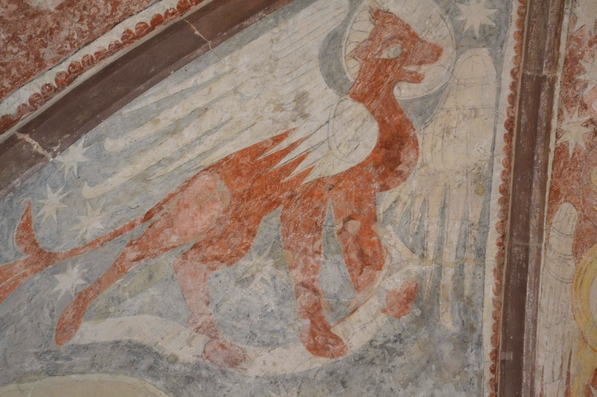
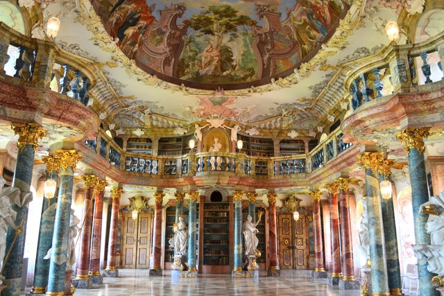

ドイツ・ロココの教会について書くにあたって、 最初に紹介したいのが「どこでもドイツ」というホームページにあった「華麗なるバロック教会めぐり」のことだ。 2017年春まで存在したホームページで （すでに閉鎖されてしまい、現在は補遺のみ残されている）、 南ドイツに点在するバロック・ロココ教会を取材した管理人の方が、 非常に資料価値の高い解説記事を書いてくださっていた。 教会を設計した人物、スタッコ装飾を手がけた人物、天井画を描いた人物などの情報から始まり、 教会の来歴や地元のエピソードまで非常に詳しく記述されていた。 ぼくがロココ教会に興味を持ったのはこのホームページがきっかけで、 いまでもロココ教会を訪れる際にこのホームページ（を手元に保存したもの）を参考にさせていただいている。
そもそも、この「南ドイツ散歩」のページを書こうと思ったのも、このホームページがきっかけになっている。 このホームページに感化されて南ドイツの「フィールドワーク」をするなかで、ぼくの人生は確実に豊かなものになった。 だから、ぼくも自分の南ドイツの体験について書いてみようと思ったのだ（クオリティははるかに低いが）。 「どこでもドイツ」の管理人の方の連絡先がわからずお礼が言えないのだが、感謝の意をここに表したい。
知名度はあまりないが、ドイツには「オーバーシュヴァーベン・バロック街道」という街道があって、 美しいロココ教会の多くはこの街道沿いに集中している。 路線バスが1日数本しかない（曜日によってはない）街も多く到達難易度が高いのだが、訪れる価値は十分あると思う。 このサイトに、街道沿いの教会がよくまとまっている。
南ドイツのロココ教会はどれも大変素晴らしいのだが、 いちばん心に残ったものを3つ挙げるとすれば、 シュタインハウゼンの巡礼教会、ヴィースの巡礼教会、ビルナウの教会だ。
5年ぶりの再訪。 5年の間に南ドイツのロココ教会をたくさん見てきたが、「圧倒的」という意味で他を凌駕しているのがロッテンブーフ修道院だと思う。 教会がそれほど大きいわけではないうえに装飾の密度が高いので空間構成が凝縮されていて、まるで洞窟に入ったような感覚にさえ陥る。 路線バスが数本しかない場所にあるので観光客もほとんどおらず、静かな空間でロココの耽美的空間に包まれてゆっくり本が読めるのも素晴らしい。
7年前にはじめて訪れたときはその美しい装飾に感動したものだったが、 この7年間にロココ教会をたくさん見すぎたせいかちょっと拍子抜けしてしまった。 ドミニクス・ツィンマーマンの作品としてはシュタインハウゼンの巡礼教会のほうが緻密で洗練されていると思う。 世界遺産に指定されているヴィース教会は観光客が多く、訪れる人の湿度で装飾が色褪せてしまうことも影響しているのかもしれない。
Niderrotweilというぶどう畑に囲まれたとても小さな集落にあるこの教会の歴史は12世紀に遡る。 小さな村教会だが、この地方でもっとも古い教会で後期ロマネスクの趣が至るところに残っており素晴らしい。 お昼前に教会に立ち寄ったところまだ教会は開いていなかった。 地元のおばさんが「2時においで。ここの祭壇は本当に素晴らしいから。」と教えてくれた。
緻密な木製彫刻の祭壇は後期ゴシックのもの。
祭壇上部の天井画にはいかにもロマネスクらしい寓意的で象徴的な動物たちが描かれる。 動物たちがお魚さんに乗って宇宙を飛んでいる。 ヤツメウナギだろうか。 ちなみにヤツメウナギはヨーロッパにもいて市の紋章になっていたりする。

こちらは近くにあるPantaleon巡礼教会。参道が素晴らしい。
アルトエッティングは重要な巡礼地である。 街の中心の広場には教会が5個以上も建ち並び、 広場を囲むお店には十字架やマリア像などキリスト教グッズが所狭しと並べられていた。
なかでももっとも重要な教会が、広場の中心に建つ恵みの礼拝堂である。 この礼拝堂には「黒い聖母」が納められている。 礼拝堂内部は撮影禁止だったので写真は撮れなかったが、 内部は壁面から天井までが黒と金で装飾され、極めて異教的なものものしい空間が広がっていた。 礼拝堂の周囲は「黒い聖母」のご利益に感謝する人たちが寄贈した絵画で埋め尽くされ、 これがいっそう独特な雰囲気を加えていた。
そもそもなぜ聖母が黒いのか？純潔の象徴であるはずの聖母は白ではないのか？ 「黒い聖母」については多くの研究が成されており諸説あるようだが、 ケルト人の土着の地母神信仰（＝ヨーロッパでは肥沃な土壌のイメージは黒）とマリア信仰が融合したと見る説が有力らしい。 単純な融合と見るのか、あるいはケルト人をキリスト教に取り込むための政治的意図のもとで聖母像が黒く塗られたのか、さまざまな解釈がありうる。
ロット・アム・インの駅で降りたのはぼくひとり。 駅前には何もなく三叉路になっている。 SIMもつながらずどの道を進んだらいいのかわからない。 山勘で真ん中の道を進み丘を登ると修道院らしきものが見えてきた。
美しいロココ様式の修道院である。天井画が見事。
この街は到達難易度が高く、辿り着くのに2回失敗している。 ローテンブルクから路線バスで行くのだが、なぜか時間になってもバスが来ない。 このバスはRufbusと言って、事前に電話で呼び出さないと来ないバスだと後で知る。 過疎地域で本当はバスを廃止したいのに公共上の理由で廃止できないためこういう仕組みをとっているのだ。これが1回め。
2回めはミュンヘン中央駅のInformation centerでバスを電話予約してから行こうとしたのだが、 「日曜はバス会社が休みでタクシーに業務委譲しているから、土曜のうちに電話をくれないと無理」と言われて断念。難しい。
3回めにやっと辿り着くことができた。こちらがRufbus。 ごく普通の車で乗客はぼくひとりだけだった(笑) そりゃそうでしょう。 Rufbusは流れるようにローテンブルクからクレクリンゲンまでロマンティック街道を滑っていく。
クレクリンゲンを訪れた最大の理由は、 ヘルゴット教会に安置されているリーメンシュナイダー作の木製のマリア祭壇。 彼の作品をローテンブルクで見たときにその躍動感に圧倒され、 彼の生涯の最高傑作と言われるクレクリンゲンの祭壇も見てみたかったのだ。 祭壇が彫られたのは1500年頃。 宗教改革による破壊を免れるために教会の奥に隠されたまま人々に忘れ去られ、 それから300年後の時が過ぎた。 おかげで非常に良好な保存状態が保たれた。 実際に見てみるとわかるが、この祭壇は巨大でどうやって300年も隠しきったかのほうが不思議である。
木彫りでこんな大胆な動きを表現できるのか、と感嘆せずにはいられない。
アウクスブルクとウルムの中間に位置するシュヴァーベン地方の小さな街、ギュンツブルク。 レゴランドがあることで有名なようだが、ぼくの目的はフラウエン教会のロココ装飾だ。 装飾を手がけたのはドミニクス・ツィンマーマン。 シュタインハウゼンの巡礼教会のところでも書いたが、ツィンマーマンの作品はメルヘンだ。 ギュンツブルクのフラウエン教会は、白とピンクを基調にしており、いっそう女性的な優美さが際立っている。 この空間に包まれて読書をするのがとても幸せな時間だ。 細部をよく眺めてみると白柱が天井に向かって細まる構造になっており、天井の広がりを演出する構成になっていることがわかる。
天井画も素晴らしい。
ギュンツブルクの街並み。
この街はミュンヘン郊外にありSバーンの電車で簡単に行ける。 その割に知名度はほとんどないように思う。
フュルステンフェルトブルックの修道院は豪壮だ。 そして、その巨大さゆえに内部は暗く重厚感がある。 これほどまでに巨大な内部空間にロココの装飾を散りばめるのは果てしないことのように思える。 ただ個人的な好みだけを言えば、巨大であることで、 ロココ特有の透明さ、女性的な優美さ、親密さといったものが失われてしまっているような気がした。
修道院の装飾はアザム兄弟によるもの。 ツィンマーマンのロココ装飾が明るいメルヘンだとすれば、アザム兄弟の装飾はバロック的な重厚感だと思う。 ミュンヘンのアザム教会にもっともそれがよく現れている。
オクセンハウゼンのところで書いたが、4月に別のシュタインハウゼンに行き間違えた。 シュタインハウゼンの巡礼教会はミュンヘンからかなり遠いうえに、 路線バスが1日数本しかないので（曜日によっては0本である）到達難易度が相当高い。 シュタインハウゼンは人口400人程度の小さな村だ。 万全を期すため、ミュンヘンからロンドンに移動する際リンダウに滞在することにし、 リンダウから巡礼教会を目指すことにした。 路線バスを逃した場合、5kmとなりの村まで歩くプランも考えておいた。
そんな到達難易度が非常に高い巡礼教会なのだが、それだけの苦労をしてもこの巡礼教会を訪れる価値は十分にある。 これまで訪れてきた数多くのロココ教会のなかで、もっとも美しい教会だと思った。 「世界一美しい農村の教会」とも言われる。
教会を装飾したのはドミニクス・ツィンマーマン。 ドミニクス・ツィンマーマンの作品は、女性的で、優美で、メルヘンだ。 白と淡いパステル色が基調になっていて、緻密なロココ装飾が空間一面に張り巡らされ、 しかしそれが正確に計算されているので全体として調和を成している。 細部に目を向ければ、リス、小鳥、あけび（？）など、可愛らしい小動物のスタッコ彫刻があちこちに散りばめられているではないか。 ツィンマーマンの教会は、白く、明るく、一種の透明感さえ感じられる。 知名度としては、世界遺産に登録されているヴィースの巡礼教会のほうがずっと有名だがシュタインハウゼンの巡礼教会のほうが美しいように思う。 いずれにせよドイツ・ロココの最高傑作であることは間違いない。
シュタインハウゼンはとても小さな村だ。 巡礼教会の外には、小麦畑やトウモロコシ畑が広がっている。
この日は村の結婚式が執り行われていた。村人総出でお祝いするのだ。 この巡礼教会は村の生活とともにある。
ウルムの郊外に位置する街、ヴィプリンゲン。 ウルムの駅から路線バスで20分ほどのところにある。 ヴィプリンゲンには修道院がありその中にロココ様式の美しい図書館がある。

写真で見ると美しいのだが、 実際には周りの修道院が現代的に改築されてしまっていたり、 図書館内部の保存状態もそれほどよくなかったりしてちぐはぐな印象を感じた。
修道院の方も美しいロココ装飾ではあるが、 これまで見てきた他の教会と比べると現代的な修復がされてしまっているところがあり少し残念だった。
この修道院はとても心に残っている。 静謐な美しさを秘めた修道院だと思う。 この美しさを言葉にするのは難しいが、あえて説明するとこういうことになると思う。
マウルブロン修道院は、ロマネスク様式からゴシック様式へ移行する時期に建設された中世シトー会の修道院だ。 シトー会の修道院は彫刻や宗教美術で装飾することをしない。 放送大学の芸術論の講義で青山先生が解説されているが「光で世界が表現される」のだ。
過度な装飾がいっさい排除され、ロマネスクの質素な窓から降り注ぐ太陽の光が、教会内に光の帯を作り出す。 それによって「世界」が表現されるのだ。 この日は曇ったり晴れたりだったが、晴れ間が見え始める瞬間、音もなく、教会内にそっと光の帯が姿を現し始める。 教会の窓は質素な作りをしているが、太陽の光が教会内に降り注ぐように位置と形が緻密に計算されている。 （外壁は石でできているのだが、光が上手に取り込めるように窓の縁が外に向かって広がるように窓が作られている。） ロマネスク様式の教会には、壮麗なロココ美術も、重厚なゴシック美術も何もない。 しかし、というよりそうであるからこそ、そこには高度に寓意的な美が宿っている。 マウルブロン修道院はその美しさを見事なまでに表現した傑作だと思う。
マウルブロン修道院はヘルマン・ヘッセ自身が神学校に通っていた場所で、「車輪の下」の舞台になった場所だ。 「車輪の下」に描かれる修道院の様子、修道院を取り巻く自然、 あの美しい風景たちがそっくりそのままあるように感じた。
マウルブロン修道院の周辺の自然も素晴らしい。 訪れたのは4月の半ばだったのだが、新緑の淡い萌木色がとても美しかった。
修道院の中庭では、木蓮の花がはらはらと音もなく舞い落ちている。 この修道院にはどこまでも静謐な美しさがある。
この修道院は行きづらい場所にある。 路線バスで行くのだが、バスによってはRufbus（呼び出しバス）といって 事前に予約しておかないとやってこないバスもある。 ただそこまでしても訪れる価値が十分ある場所だと思う。 「車輪の下」が好きな方はぜひ。
この教会も路線バスでしか行けないのだが、 路線バスが1時間に1本あるという点で、 到達難易度はそれほど高くない（と思えるくらい到達難易度が高いロココ教会にいくつも行っている(笑)）。 バーデン・ヴュルテンベルク州にあるので ミュンヘンからだと片道5時間近くかかるのだが、本を読みながらのんびりものを考えるにはいい時間だ。
この教会の印象を一言でいうなら「ピンク」だ。 ヴィース教会が白と黄色の空間だとすれば、ビルナウの教会は白とピンクの空間だ。 外壁もピンクで塗られているし、内部も白とピンクが基調になっている。 「華麗なるバロック教会めぐり」のサイトによれば、 この外壁の色についてはひと悶着あったようで、 教会の建築当時、教会の塔の色がピンクと白でどう塗り分けられていたかの学者論争があり、 修復時にどっちの色でどう塗り分けるで意見が割れていたらしい。 結果的には全部ピンクになった。
教会内部は、非常に複雑なロココ装飾が散りばめられている。 ピンクの色調が印象的で、ロココの女性的な優美さがいっそう引き立っている。
ところでこの教会は街の中に立っているわけではなく、ボーデン湖畔のぶどう畑の丘の上にぽつんと立っている。 リンダウからボーデン湖畔沿いを電車に乗って行くとぶどう畑の中からピンク色の教会が遠くから見えてきて、 電車は教会の立つ丘の真下を駆け抜けていく。

ベルヒテスガーデンから路線バスで20分ほど山を登ったところにある教会。 カレンダーの表紙などでおなじみの、いわゆる「絵になる」教会だ。 真夏のコントラストのなかでラムサウの白い教会を見たくて訪れた。 暑い日だった。
ラムサウの教会の内部。シンプルな作りの村教会である。
アルゴイ地方の小さな村、オットーボイレン。 この村にはベネディクト派の壮麗な修道院がある。 季節は4月末だったが、空気は冷たく雪が時折はらはら舞っていた。
オットーボイレンの修道院は巨大だ。 その巨大な空間一面に豪壮なバロック・ロココの装飾が散りばめられている。 ロココ装飾といっても、その空間の巨大さと、大胆に配置された太い柱を中心とした空間構成のため、 女性的な優美さやメルヘンさといったものはあまり感じられない。 しかし祭壇や天井画の装飾は実に緻密で、その細部を見つめればロココのスタッコ装飾の数々が親密に語りかけてくる。 とにかくこの修道院は空間構成が素晴らしい。 教会を設計したのはヨハン・ミヒャエル・フィッシャーだ。

さて、ここから帰るのが大変だった。 オットーボイレンに着いたときに乗ってきたバスは乗客2人とかそんなものだったが、 修道院が近くなると、バス停ではないところで降ろされた。 英語が通じないので何を言われたのかよくわからない。
問題なのは、「帰りのバスはどこから乗ればよいか」である。 さっきのバス停ではない場所に来てくれるのか。それとも違う場所なのか。 SIMを持っていないので調べようもない。 バスは2時間に1本なので、今日中にミュンヘンに帰るためにはチャンスは3回しか残されていない。
オットーボイレンの村を歩いているとバス停を発見したが、下に何か張り紙がしてある。 通りかかる村人に聞いてみたら、「このバス停はもう使われてない。Schule Centerのバス停に行くように。」 と書いてあることがわかった。Schule Centerってどこよ。
Schule Centerを探すべく、再び聞き込み調査を続けるが、アルゴイ地方は英語がほとんど通じない。 たまに英語が通じる人もいるのだが、地元の人ではないのでSchule Centerを知らない。。。 やっとのことでSchule Centerの場所を突き止め、行ってみたのだが、 バス停はあるものの、ぼくが乗りたいバスの時刻が書いてないではないか （のちにこれはバス停の時刻表のミスだと発覚する）。
仕方なく街に戻り、再び右往左往していたところ、 来るとき乗っていたバスが道端に止まっていて、そのなかで家族とお昼寝しているバスの運転手を発見。 事情を話したところ「バスは1時間後に出るからそのときここに来い」と言ってもらえた。 ほっとした。
アルペン街道に位置する小さな村。 オーバーアウの方から路線バスで行くと、 曲がりくねった険しい山道をしばらく走り、峠を越えたところに巨大な修道院がいきなりどーんと現れる。 これがロココ美術の傑作、エッタール修道院だ。
エッタール修道院の内部は円形の空間になっている。天井画が大変素晴らしい。
2度めのノイシュヴァンシュタイン城。季節は真冬の2月末。 白亜のお城が白の世界に包まれている。 この日はお城に上るバスが運休していたので、30分ほど山道を歩いて登った。
さて、今回ここに来た理由はお城を見るためではない。 お城から平原の方を見渡すと、こんな景色なのだが、 写真中央のやや右に見える十字路の少し先に、小さな教会が見えるのがわかるだろうか。 聖コロマン教会といって、ノイシュヴァンシュタイン城から見下ろす大平原に佇む教会として、 通な観光客に人気のある教会なのだ。
といっても、いくら通な観光客でも、お城から眺めはしてもここに行く人はほとんどいない。 バス停さえないのだ。
そういうわけで歩いて行ってみることにした。
山を下りて聖コロマン教会まで6kmほどの道のりである。 どんよりと曇った雪空の下をひたすら歩く。 道の脇に足を踏み込んでみたら、軽く60cmは雪が積もっていた。 ノイシュヴァンシュタイン城がはるか遠くに見えるのがわかるだろうか。
やっと辿り着いた聖コロマン教会。 この教会も素晴らしいロココ装飾らしいが、一部の曜日にしか開いていないようで入れなかった。 でもぼくは満足して、来た道を再び歩いて戻った。 （ドイツの一面雪景色の平原を一度歩いてみたかったのだ。）
ロッテンブーフはロマンティック街道沿いの人口1700人ほどの小さな村である。 路線バスで行くのだが、10人乗りの小型バスで1日に数本しかない。 ロッテンブーフに着いてから帰りのバスが来るまでの4時間、バスは来ない。そんな村だ。
この村にはロッテンブーフ修道院があり、この修道院のロココ装飾は「ものすごい」（という表現がもっとも的を射ているかと思う）。
隙間のないほどに一面に埋めれられたロココ装飾。 信仰のためにここまでするのか！ ヴィースの巡礼教会やシュタインハウゼンの巡礼教会などと比べると、 どうしても調和のなさを感じざるをえない部分もあるが、一線を画した大変素晴らしいロココ教会であることは間違いない。
季節は5月。牧草地に咲く花がきれいです。
ドミニクス・ツィンマーマンによるロココ装飾の傑作、ヴィースの巡礼教会。 この巡礼教会はロマンティック街道から少し外れた牧草地にぽつんと立っている。 周りには何もない。牧草地が広がりカウベルの音が鳴る、とてものどかな場所だ。 最寄りのフュッセンの駅からは路線バスで50分ほどかかる。バスは1日数本しかない。
外観は、牧場の中に佇む質素な村教会だ。

しかし、内部のロココ装飾は言葉を失うほどの美しさだ。 白と黄色を基調とした柔らかなメルヘンの空間が一面に広がる。 装飾はきわめて緻密に計算されて配置されており、全体がひとつの調和を成している。 巡礼教会とは、巡礼者が長い旅の途中で立ち寄る教会である。 扉を開けた瞬間、この幻想空間に包まれた巡礼者たちは何を思ったのだろうか。
ツィンマーマンはこの教会に特別な愛情と情熱を傾けていたらしく、 完成後も近くに家を移し、ずっと教会を見守り続けたようだ。